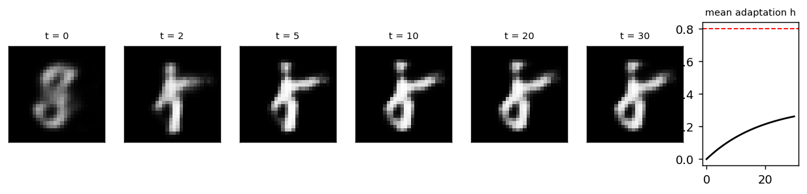
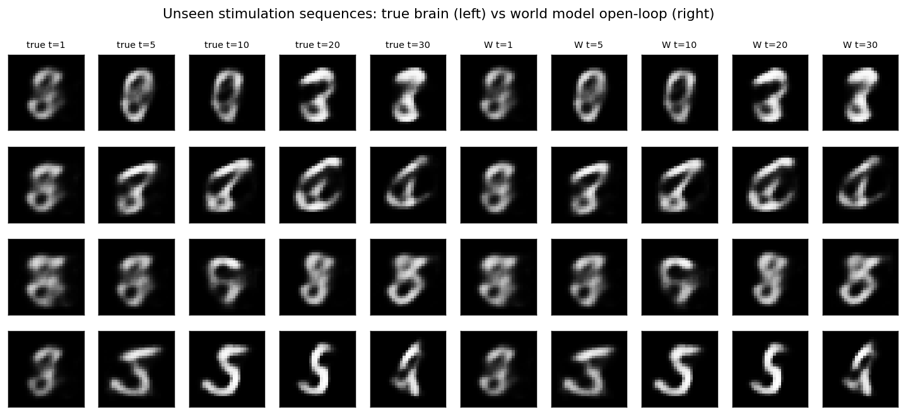
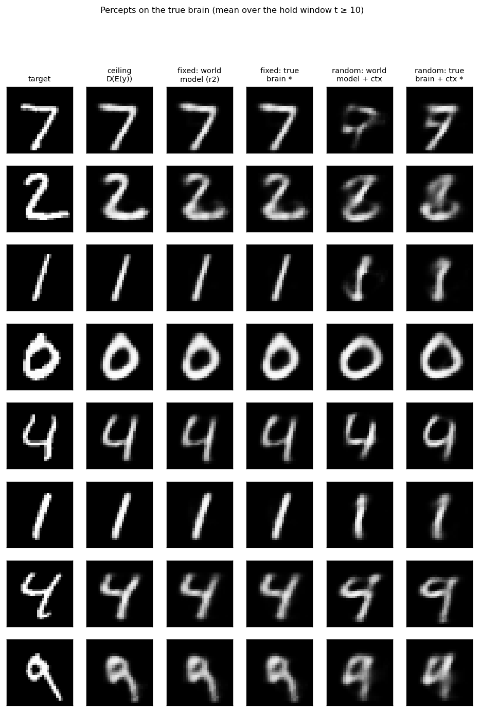
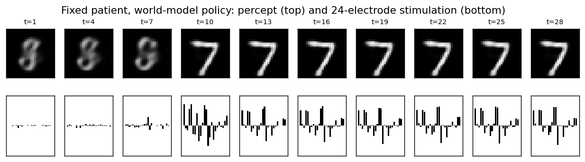

NeuroStim-Percept: image targets through a world model
Home · Getting started · User guide · Nomenclature · Models · NeuroStim · References
In NeuroStim the target was a point in a 3-D latent space. Here it is an image. Stimulation drives a 16-D neural state, and a frozen decoder turns that state into a percept. The stimulation policy is learned by backpropagating a reconstruction loss through a learned world model, never through the brain itself. There is no RL.
Source: src/sentionaut/neurostim/percept.py · Tutorial:
examples/neurostim_percept_tutorial.py · Maths: canonical
formulation (this tutorial is rung L5)
Pipeline
```text target y ─► π(E(y), ctx) ─► a_{1:T} ─► brain ─► x_t ─► D(x_t) (evaluation: true percept) └──► W(z_0, ctx, a) ─► ẑ_t ─► D(ẑ_t) (training: predicted percept)
loss = Σ_{t ≥ 10} ‖D(ẑ_t) − y‖² + λ · charge ```
| Part | What it is | Learned from |
|---|---|---|
D, E |
MNIST autoencoder with a 16-D code: the neural state space and the percept readout (brain2vision) |
MNIST, then frozen |
| Brain | NeuroStim dynamics in that code space: x_{t+1} = A x − αx³ + B diag(1/(1+λh)) tanh(a) + w, 24 electrodes, adaptation, charge limit Σ|a| ≤ 8 |
– (ground truth, a black box) |
W (world model) |
GRU. From the resting percept (and a patient context) it predicts the open-loop latent trajectory, decoded by D |
observed (stimulation, percept) episodes only |
π (policy) |
MLP: E(y) (+ context) → a 30-step, 24-electrode stimulation sequence; tanh bound and charge projection |
backprop through W on MNIST train images |
| classifier | frozen MLP on MNIST; the accuracy on percepts answers "is the digit recognisable?" | MNIST |
W is allowed to use D. The percept readout stands in for a known
brain2vision model, like the repo's phosphene models. What W must learn
is the patient-specific part: stimulation → neural state, including
adaptation.
Fixed vs random patients
- Fixed patient. One
B.Wis fitted on 6 000 exploration episodes (i.i.d. noise, held patterns, smooth drifts), then the policy is trained through it. Round 2 stimulates the true brain with the round-1 policy, adds those episodes and refitsWandπ. The model has to be accurate where the policy actually operates, and round 2 makes it so. - Random patients. A new
Bfor every episode. A calibration sweep pulses each electrode once from rest. The encoded percept changes, 24 × 16 numbers, form a noisy view ofB. They conditionWandπthrough a hypernetwork: the patient multiplies the action (B a), so the context emits the matrix the action is multiplied by. Concatenating the context with the action failed (about 10 % accuracy). - Privileged reference
*. The same policy trained by backprop through the true brain. The gap between it and the world-model policy is what the world model costs.
Tutorial
bash
uv run python examples/neurostim_percept_tutorial.py # ~45 min, 4 CPU cores
uv run python examples/neurostim_percept_tutorial.py --quick # ~1 min smoke run
Holding one random stimulation pattern: the percept forms within a few steps.
Adaptation keeps building, but in 30 steps it stays well below h_max, so
there is little visible fading.

World model vs true brain on stimulation sequences it never saw (open-loop from the resting percept):

Percepts the true brain produces for held-out test digits (mean over the hold window):

One stimulation sequence and its percept over time (fixed patient). The
policy barely stimulates for the first 9 steps and switches on at t = 10,
exactly when the loss window starts. It learned to save charge and
adaptation for the steps that are scored.

Results
1 000 MNIST test digits, evaluated on the true brain. Random patients use
1 000 held-out patients, one per digit. Pixel MSE and classifier accuracy are
computed on the percept over the hold window (t ≥ 10). Charge is Σ|a|
per step.
| setting | policy | pixel MSE | classifier accuracy | charge | h > h_max |
|---|---|---|---|---|---|
| any | ceiling D(E(y)) (latent reached exactly) | 0.0106 | 0.950 | 0.00 | 0.000 |
| fixed patient | no stimulation | 0.0738 | 0.089 | 0.00 | 0.000 |
| fixed patient | policy via world model (round 1) | 0.0156 | 0.934 | 4.42 | 0.000 |
| fixed patient | policy via world model (round 2) | 0.0143 | 0.935 | 4.35 | 0.000 |
| fixed patient | policy via true brain * | 0.0139 | 0.929 | 3.95 | 0.000 |
| random patients | no stimulation | 0.0738 | 0.089 | 0.00 | 0.000 |
| random patients | fixed-patient policy (no personalisation) | 0.1020 | 0.103 | 4.35 | 0.000 |
| random patients | world model + calibration context | 0.0470 | 0.601 | 2.51 | 0.000 |
| random patients | true brain + calibration context * | 0.0417 | 0.664 | 1.91 | 0.000 |
Reading the results
- Fixed patient: the world model is almost free. A policy trained only
through
Wreaches 93.4 % accuracy (MSE 0.0156). Round 2 on-policy data brings MSE to 0.0143, against 0.0139 for the privileged reference. All three sit close to the autoencoder ceilingD(E(y))(95.0 %, MSE 0.0106), the best any stimulation can do. - Random patients: personalisation is the bottleneck, not the world
model. The world-model policy reaches 60.1 %, its privileged counterpart
66.4 %, and both are far below the fixed-patient 93 %. One network has to map
every calibration record to a good stimulation, in effect an amortised
pseudo-inverse of
B. A policy tuned to one patient is worse than no stimulation on another (MSE 0.102 vs 0.074). - Adaptation hardly binds here (
h > h_maxstays at 0). The charge limit and the 30-step horizon keep drive modest. Longer holds or a lowerh_maxwould make it bind.
Caveats and next steps
- The policy is open-loop: one sequence per target. A closed-loop policy, feeding back observed percepts, would correct drift and model error online.
WgetsDfor free. Learning a separate decoder from images alone is a harder and more honest setting. ThenWbecomes a small image world model, like the repo's learned transformer.- The random-patient gap should shrink with more calibration (repeated or
graded pulses), per-patient fine-tuning of
πthroughW(test-time optimisation), or explicit identification ofBfrom the probe. Each is a one-function change. - On a real patient you cannot backprop through the brain. That is why only
the world-model rows are methods; the
*rows are yardsticks.